매일 아침 갓 구운 빵들이 가득한
베이커리 컬러를 담은 10컬러 아이 섀도 팔레트
에뛰드 하우스 플레이 컬러 아이즈
[베이크 하우스] 0.8gx10
01
따뜻한 브러운 컬러 쉐이드
따뜻하고 분위기 있는눈매를 연출해주는 브라운 계열의
10색 섀도 팔레트
02
소프트&실키 텍스처
부드럽고 밀착력이 우수한 베이스로뭉침과 가루날림 없이 오랜 시간
선명한 발색과 펄감이 유지됩니다.
COLOR SYSTEM
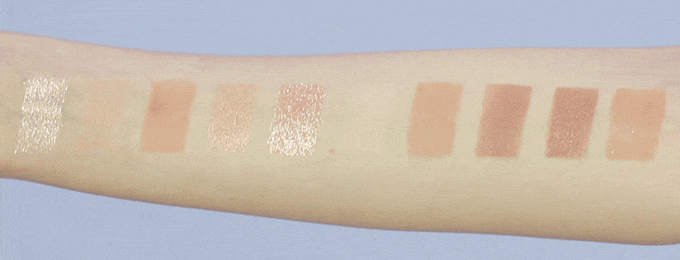-
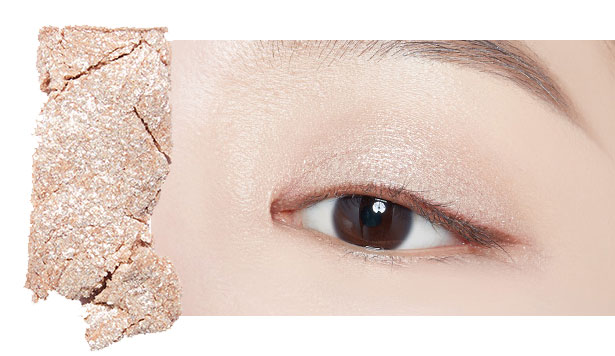
슈가 러스크 글리터 설창을 솔솔 뿌린 듯,
촤르르한 펄감의 화이트골드 글리터 -
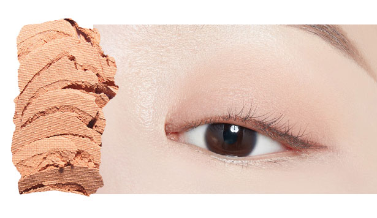
까페라떼 우유많이 매트 우유 듬뿍 카페라떼처럼,
핑크 베이지 컬러 -
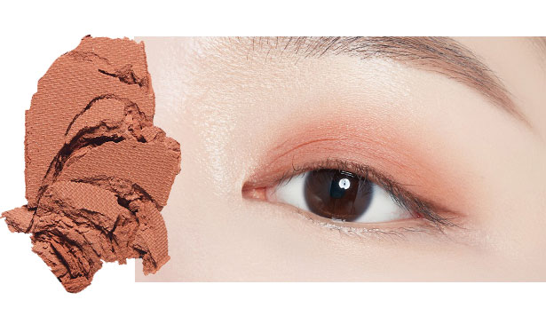
솔솔 말린 솔바울 매트 붉은기 도는 솔방울 브라운 컬러
-
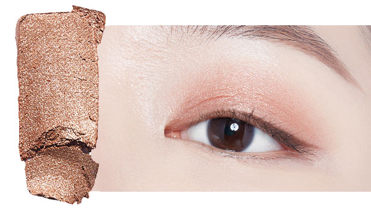
통기타 여신 쉬머 붉은기 도는 솔방울 브라운 컬러
-
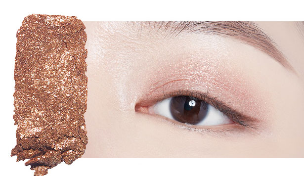
시나몬 페이스트리 글리터 시나몬 가루 듬뿍
핑크펄이 콕콕 박힌 골드 글리터 -
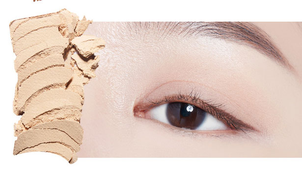
크림 치즈 베이글 매트 하얗고 부드러운
크림치즈 베이지 컬러 -
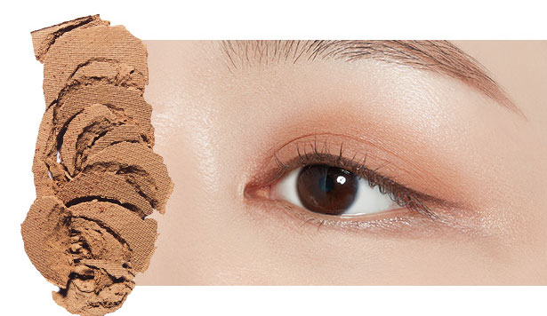
해변에선 코코넛 매트 잘 익은 코코넛 껍질의 브라운 컬러
-
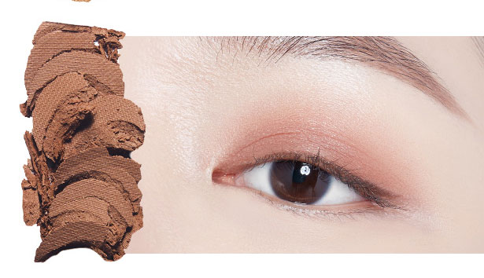
미니 카눌레 매트 잘 구워진 카눌레 브라운 컬러
-
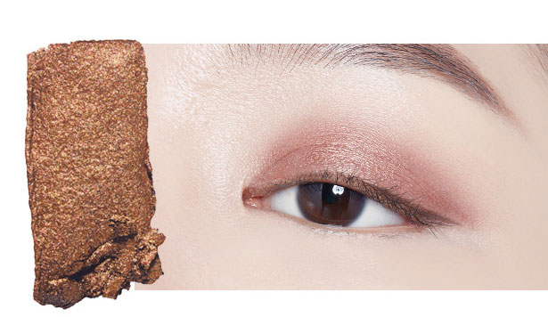
솔티 브라우니 쉬머 은은하게 빛나는
깊고 진한 브라우니 컬러 -
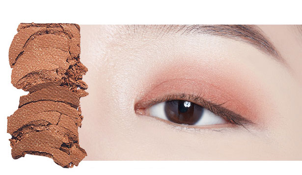
아몬드 크루아상 매트-쉬머 아몬드가 콕콕 바삭한 크루아상처럼
골드펄이 들어간 브라운 컬러
HOW TO USE
내장된 팁의 넓은 부분으로 베이스 컬러를
눈꺼플 전체에 펴발라 주시고, 접은 부분으로
그라데이션이나 눈꼬리, 아이라인 등 세심한 곳에
포인트 컬러를 바를때 사용해 주세요.